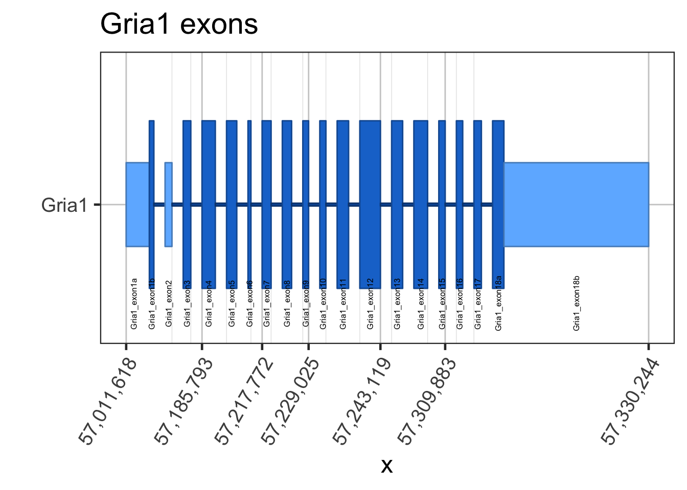
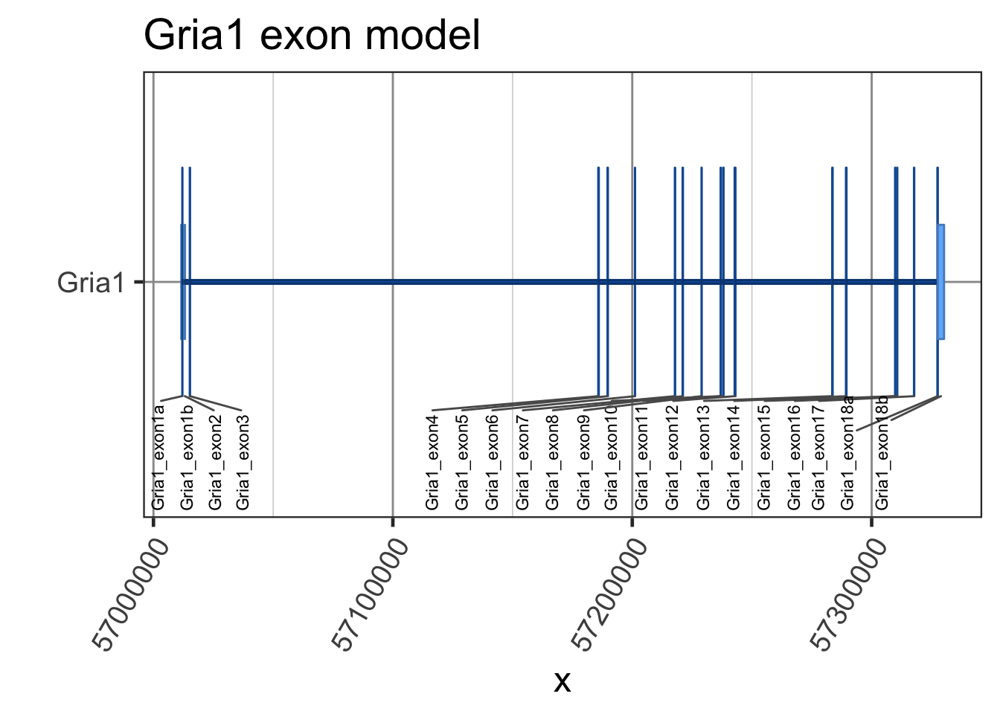
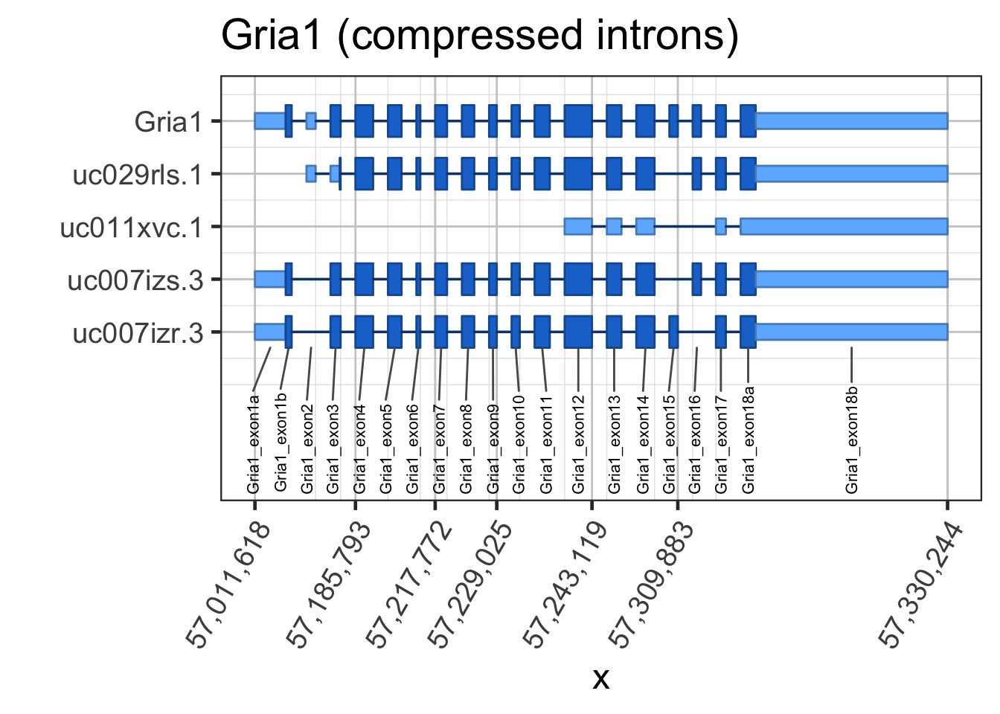
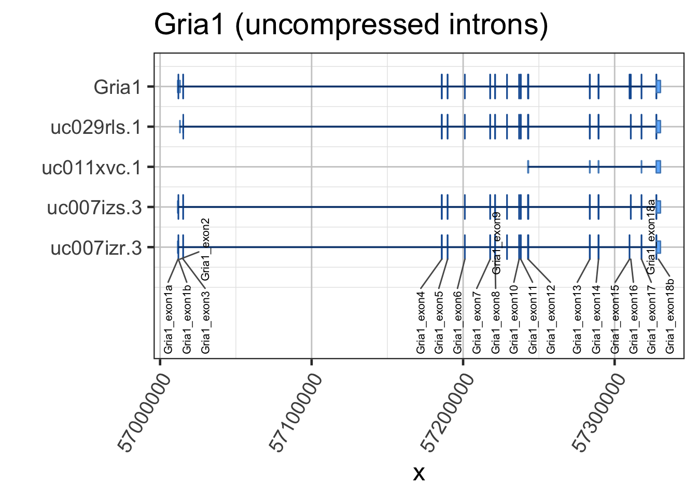
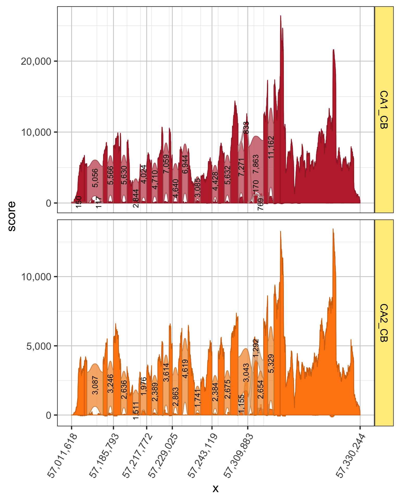
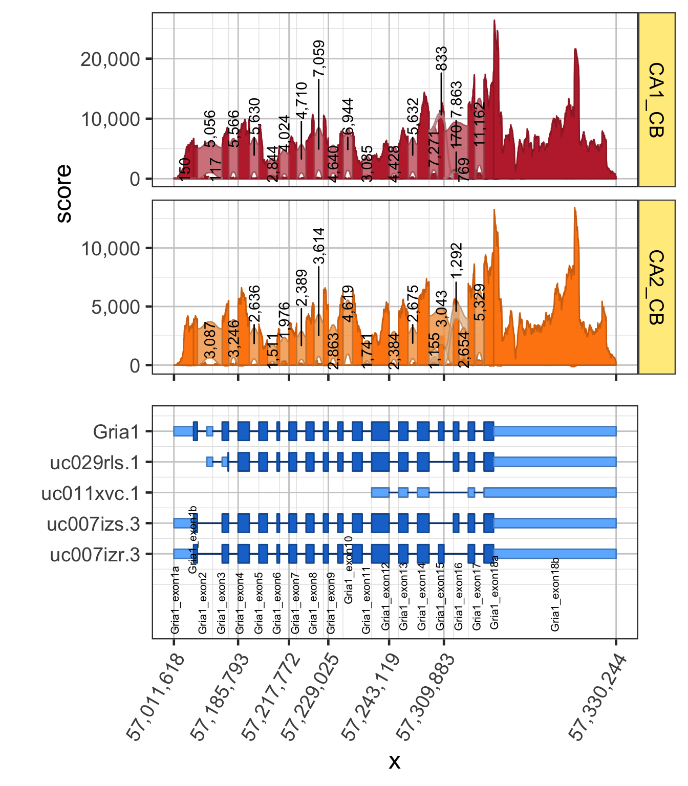

vignettes/create-a-sashimi-plot.Rmd
create-a-sashimi-plot.RmdThis vignette is intended to describe how to create a Sashimi plot using RNA-seq data.
There are three basic requirements for a Sashimi plot:
There are several sources of gene-exon structures:
Txdb transcript database, provided by GenomicFeatures::TxDb
GenomicFeatures::makeTxDbFromGFF() to create a TxDb object, then follow the steps starting with TxDb.BiocManager::install("TxDb.Hsapiens.UCSC.hg19.knownGene").GRanges or GRangesList objects, already assembled by other methods.
rtracklayer::import() has several methods that can import BED files, or GTF files.The goal for Sashimi plots is to flatten exons to disjoint (non-overlapping) exons across the gene region of interest. The exons are used to determine the genomic regions to use for sequence coverage, and splice junction reads. The exons are also used to define intron region compression, in order to make the Sashimi plot more transcript-focused.
The recommended workflow involves assembling transcript exons, then aggregating detected transcripts into gene-exon models. The driving reason is that transcriptome data is increasingly comprehensive, and is derived from numerous tissue samples and cell types, many of which are not relevant nor representative of the transcriptome observed in a particular experimental condition. While it is not problematic to visualize a gene model whose exons are derived from all possible conditions, we found many gene models to be unnecessarily complex, therefore overshadowing the actual observed structure.
Said another way, many of the automated transcript structures are either just wrong, or were derived from conditions vastly different from those observed. Since tools like Salmon or Kallisto have the capability to determine detected and undetected transcripts based upon observing experimental data, we found it effective to use that information to define data-driven gene-exon models.
The example uses Bioconductor data package TxDb.Mmusculus.UCSC.mm10.knownGene using UCSC known genes for the mouse mm10 genome assembly.
The TxDb objects do not permit assigning gene names nor gene symbols, so the example uses the Bioconductor annotation package org.Mm.eg.db to assign gene_name values. For any missing values, we use the format LOC# to indicate the Entrez gene ID, for example Entrez gene ID 1234 would be represented LOC1234.
library(splicejam);
library(jamba);
library(kableExtra)
if (require(TxDb.Mmusculus.UCSC.mm10.knownGene)) {
# First obtain exons by transcript
exonsByTxMm10 <- exonsBy(TxDb.Mmusculus.UCSC.mm10.knownGene,
by="tx",
use.names=TRUE);
values(exonsByTxMm10@unlistData)$feature_type <- "exon";
values(exonsByTxMm10@unlistData)$subclass <- "exon";
# For added insight, obtain CDS exons by transcript (optional)
cdsByTxMm10 <- cdsBy(TxDb.Mmusculus.UCSC.mm10.knownGene,
by="tx",
use.names=TRUE);
values(cdsByTxMm10@unlistData)$feature_type <- "cds";
# Now prepare tx_name, gene_id, gene_name data.frame,
# surprisingly difficult
tx2geneMm10 <- suppressMessages(
AnnotationDbi::select(TxDb.Mmusculus.UCSC.mm10.knownGene,
keys(TxDb.Mmusculus.UCSC.mm10.knownGene, "GENEID"),
columns=c("GENEID","TXNAME"),
keytype="GENEID"
)
);
tx2geneMm10 <- renameColumn(tx2geneMm10,
from=c("GENEID", "TXNAME", "TXTYPE"),
to=c("gene_id", "transcript_id", "transcript_type"));
# add gene_name using org.Mm.eg.db
if (require(org.Mm.eg.db)) {
gene_ids <- values(genes(TxDb.Mmusculus.UCSC.mm10.knownGene))$gene_id;
gene_namesL <- mget(gene_ids,
org.Mm.egSYMBOL,
ifnotfound=NA);
## Convert list to vector taking the first gene_name each
gene_names <- unlist(heads(S4Vectors::List(gene_namesL), 1));
## Replace NA with LOC# format
if (any(is.na(gene_names))) {
gene_na <- which(is.na(gene_names));
gene_names[gene_na] <- paste0("LOC",
names(gene_names[gene_na]));
}
tx2geneMm10$gene_name <- gene_names[as.character(tx2geneMm10$gene_id)];
} else {
tx2geneMm10$gene_name <- as.character(tx2geneMm10$gene_id);
}
# print the first 20 rows to show the content
print(head(tx2geneMm10, 20));
# flatten exons to the gene level
# for speed, we will only process "Gria1", and "Ntrk2"
flatExonsByGeneMm10 <- flattenExonsByGene(exonsByTx=exonsByTxMm10,
cdsByTx=cdsByTxMm10,
genes=c("Gria1", "Ntrk2"),
tx2geneDF=tx2geneMm10,
verbose=FALSE);
# to be fancy, also flatten transcripts, to include CDS ranges
flatExonsByTxMm10 <- flattenExonsByGene(exonsByTx=exonsByTxMm10,
cdsByTx=cdsByTxMm10,
tx2geneDF=tx2geneMm10,
by="tx",
genes=c("Gria1", "Ntrk2"));
}
#> Loading required package: TxDb.Mmusculus.UCSC.mm10.knownGene
#> Loading required package: GenomicFeatures
#> Warning: package 'GenomicFeatures' was built under R version 3.5.2
#> Loading required package: BiocGenerics
#> Loading required package: parallel
#>
#> Attaching package: 'BiocGenerics'
#> The following objects are masked from 'package:parallel':
#>
#> clusterApply, clusterApplyLB, clusterCall, clusterEvalQ,
#> clusterExport, clusterMap, parApply, parCapply, parLapply,
#> parLapplyLB, parRapply, parSapply, parSapplyLB
#> The following objects are masked from 'package:stats':
#>
#> IQR, mad, sd, var, xtabs
#> The following objects are masked from 'package:base':
#>
#> Filter, Find, Map, Position, Reduce, anyDuplicated, append,
#> as.data.frame, basename, cbind, colMeans, colSums, colnames,
#> dirname, do.call, duplicated, eval, evalq, get, grep, grepl,
#> intersect, is.unsorted, lapply, lengths, mapply, match, mget,
#> order, paste, pmax, pmax.int, pmin, pmin.int, rank, rbind,
#> rowMeans, rowSums, rownames, sapply, setdiff, sort, table,
#> tapply, union, unique, unsplit, which, which.max, which.min
#> Loading required package: S4Vectors
#> Loading required package: stats4
#>
#> Attaching package: 'S4Vectors'
#> The following object is masked from 'package:base':
#>
#> expand.grid
#> Loading required package: IRanges
#> Loading required package: GenomeInfoDb
#> Loading required package: GenomicRanges
#> Loading required package: AnnotationDbi
#> Loading required package: Biobase
#> Welcome to Bioconductor
#>
#> Vignettes contain introductory material; view with
#> 'browseVignettes()'. To cite Bioconductor, see
#> 'citation("Biobase")', and for packages 'citation("pkgname")'.
#> Loading required package: org.Mm.eg.db
#>
#> gene_id transcript_id gene_name
#> 1 100009600 uc009veu.1 Zglp1
#> 2 100009600 uc033jjg.1 Zglp1
#> 3 100009609 uc012fog.1 Vmn2r65
#> 4 100009614 uc011xhj.2 Gm10024
#> 5 100009664 uc007inp.3 F630206G17Rik
#> 6 100012 uc008vqx.2 Oog3
#> 7 100017 uc008vfo.3 Ldlrap1
#> 8 100017 uc012dmx.1 Ldlrap1
#> 9 100019 uc008sey.1 Mdn1
#> 10 100019 uc008sez.1 Mdn1
#> 11 100019 uc008sfa.1 Mdn1
#> 12 100019 uc008sfb.1 Mdn1
#> 13 100019 uc008sfc.1 Mdn1
#> 14 100019 uc008sfd.1 Mdn1
#> 15 100033459 uc007drs.1 Ifi208
#> 16 100033459 uc007drt.1 Ifi208
#> 17 100034251 uc007kpq.1 Wfdc17
#> 18 100034361 uc008lzg.1 Mfap1b
#> 19 100034363 uc009ujg.2 Tmsb15b2
#> 20 100034684 uc007zcm.1 BC100530Once the gene-transcript-exon data is prepared, the process of plotting data for one gene is demonstrated below.
if (require(TxDb.Mmusculus.UCSC.mm10.knownGene)) {
# Pull out Gria1
grlGria1 <- flatExonsByGeneMm10[["Gria1"]];
## Plot a basic gene-exon structure
ggGria1exons <- gene2gg(gene="Gria1",
flatExonsByGene=flatExonsByGeneMm10,
exonLabelSize=6);
print(ggGria1exons);
## Compare to the gene structure without compressing introns
gg1full <- gene2gg(gene="Gria1",
flatExonsByGene=flatExonsByGeneMm10,
compressGaps=FALSE)
print(gg1full);
## Plot a slightly more detailed gene-transcript-exon structure
ggGria1exonsTx <- gene2gg(gene="Gria1",
flatExonsByGene=flatExonsByGeneMm10,
flatExonsByTx=flatExonsByTxMm10,
tx2geneDF=tx2geneMm10);
print(ggGria1exonsTx);
## Notice how difficult it is to see exon15 and exon16 are
## mutually exclusive exons
gg2full <- gene2gg(gene="Gria1",
flatExonsByGene=flatExonsByGeneMm10,
flatExonsByTx=flatExonsByTxMm10,
tx2geneDF=tx2geneMm10,
compressGaps=FALSE);
print(gg2full);
}
#> Warning: package 'colorspace' was built under R version 3.5.2
#> ## (15:36:54) 26Mar2019: head(df):
#> x y id grl_name gr_name gene_name subclass gene_nameExon
#> 1 57011618 -0.15 1 Gria1 Gria1_exon1a Gria1 noncds Gria1_exon1a
#> 2 57012033 -0.15 1 Gria1 Gria1_exon1a Gria1 noncds Gria1_exon1a
#> 3 57012033 0.15 1 Gria1 Gria1_exon1a Gria1 noncds Gria1_exon1a
#> 4 57011618 0.15 1 Gria1 Gria1_exon1a Gria1 noncds Gria1_exon1a
#> 5 57012034 -0.30 2 Gria1 Gria1_exon1b Gria1 cds Gria1_exon1b
#> 6 57012115 -0.30 2 Gria1 Gria1_exon1b Gria1 cds Gria1_exon1b
#> feature_type
#> 1 exon
#> 2 exon
#> 3 exon
#> 4 exon
#> 5 exon
#> 6 exon
#> x y id grl_name gr_name gene_name subclass
#> 143 57327646 0.30 36 Gria1 Gria1_exon18a Gria1 cds
#> 144 57327443 0.30 36 Gria1 Gria1_exon18a Gria1 cds
#> 145 57327647 -0.15 37 Gria1 Gria1_exon18b Gria1 noncds
#> 146 57330244 -0.15 37 Gria1 Gria1_exon18b Gria1 noncds
#> 147 57330244 0.15 37 Gria1 Gria1_exon18b Gria1 noncds
#> 148 57327647 0.15 37 Gria1 Gria1_exon18b Gria1 noncds
#> gene_nameExon feature_type
#> 143 Gria1_exon18a exon
#> 144 Gria1_exon18a exon
#> 145 Gria1_exon18b exon
#> 146 Gria1_exon18b exon
#> 147 Gria1_exon18b exon
#> 148 Gria1_exon18b exon
#> Warning: package 'data.table' was built under R version 3.5.2
#> Warning: Ignoring unknown parameters: fill
#> ## (15:36:55) 26Mar2019: head(df):
#> x y id grl_name gr_name gene_name subclass gene_nameExon
#> 1 57011618 -0.15 1 Gria1 Gria1_exon1a Gria1 noncds Gria1_exon1a
#> 2 57012033 -0.15 1 Gria1 Gria1_exon1a Gria1 noncds Gria1_exon1a
#> 3 57012033 0.15 1 Gria1 Gria1_exon1a Gria1 noncds Gria1_exon1a
#> 4 57011618 0.15 1 Gria1 Gria1_exon1a Gria1 noncds Gria1_exon1a
#> 5 57012034 -0.30 2 Gria1 Gria1_exon1b Gria1 cds Gria1_exon1b
#> 6 57012115 -0.30 2 Gria1 Gria1_exon1b Gria1 cds Gria1_exon1b
#> feature_type
#> 1 exon
#> 2 exon
#> 3 exon
#> 4 exon
#> 5 exon
#> 6 exon
#> x y id grl_name gr_name gene_name subclass
#> 143 57327646 0.30 36 Gria1 Gria1_exon18a Gria1 cds
#> 144 57327443 0.30 36 Gria1 Gria1_exon18a Gria1 cds
#> 145 57327647 -0.15 37 Gria1 Gria1_exon18b Gria1 noncds
#> 146 57330244 -0.15 37 Gria1 Gria1_exon18b Gria1 noncds
#> 147 57330244 0.15 37 Gria1 Gria1_exon18b Gria1 noncds
#> 148 57327647 0.15 37 Gria1 Gria1_exon18b Gria1 noncds
#> gene_nameExon feature_type
#> 143 Gria1_exon18a exon
#> 144 Gria1_exon18a exon
#> 145 Gria1_exon18b exon
#> 146 Gria1_exon18b exon
#> 147 Gria1_exon18b exon
#> 148 Gria1_exon18b exon
#> Warning: Ignoring unknown parameters: fill
#> ## (15:36:56) 26Mar2019: Checking flatExonsByTx.
#> ## (15:36:56) 26Mar2019: head(df):
#> x y id grl_name gr_name transcript_id gene_name
#> 1 57011618 -0.15 1 uc007izr.3 uc007izr.3_exon1a uc007izr.3 Gria1
#> 2 57012033 -0.15 1 uc007izr.3 uc007izr.3_exon1a uc007izr.3 Gria1
#> 3 57012033 0.15 1 uc007izr.3 uc007izr.3_exon1a uc007izr.3 Gria1
#> 4 57011618 0.15 1 uc007izr.3 uc007izr.3_exon1a uc007izr.3 Gria1
#> 5 57012034 -0.30 2 uc007izr.3 uc007izr.3_exon1b uc007izr.3 Gria1
#> 6 57012115 -0.30 2 uc007izr.3 uc007izr.3_exon1b uc007izr.3 Gria1
#> subclass transcript_idExon feature_type gene_nameExon
#> 1 noncds uc007izr.3_exon1a exon <NA>
#> 2 noncds uc007izr.3_exon1a exon <NA>
#> 3 noncds uc007izr.3_exon1a exon <NA>
#> 4 noncds uc007izr.3_exon1a exon <NA>
#> 5 cds uc007izr.3_exon1b exon <NA>
#> 6 cds uc007izr.3_exon1b exon <NA>
#> x y id grl_name gr_name transcript_id gene_name
#> 575 57327646 4.30 144 Gria1 Gria1_exon18a <NA> Gria1
#> 576 57327443 4.30 144 Gria1 Gria1_exon18a <NA> Gria1
#> 577 57327647 3.85 145 Gria1 Gria1_exon18b <NA> Gria1
#> 578 57330244 3.85 145 Gria1 Gria1_exon18b <NA> Gria1
#> 579 57330244 4.15 145 Gria1 Gria1_exon18b <NA> Gria1
#> 580 57327647 4.15 145 Gria1 Gria1_exon18b <NA> Gria1
#> subclass transcript_idExon feature_type gene_nameExon
#> 575 cds <NA> exon Gria1_exon18a
#> 576 cds <NA> exon Gria1_exon18a
#> 577 noncds <NA> exon Gria1_exon18b
#> 578 noncds <NA> exon Gria1_exon18b
#> 579 noncds <NA> exon Gria1_exon18b
#> 580 noncds <NA> exon Gria1_exon18b
#> Warning: Ignoring unknown parameters: fill
#> Warning: Removed 1 rows containing missing values (geom_text_repel).
#> ## (15:36:57) 26Mar2019: Checking flatExonsByTx.
#> ## (15:36:57) 26Mar2019: head(df):
#> x y id grl_name gr_name transcript_id gene_name
#> 1 57011618 -0.15 1 uc007izr.3 uc007izr.3_exon1a uc007izr.3 Gria1
#> 2 57012033 -0.15 1 uc007izr.3 uc007izr.3_exon1a uc007izr.3 Gria1
#> 3 57012033 0.15 1 uc007izr.3 uc007izr.3_exon1a uc007izr.3 Gria1
#> 4 57011618 0.15 1 uc007izr.3 uc007izr.3_exon1a uc007izr.3 Gria1
#> 5 57012034 -0.30 2 uc007izr.3 uc007izr.3_exon1b uc007izr.3 Gria1
#> 6 57012115 -0.30 2 uc007izr.3 uc007izr.3_exon1b uc007izr.3 Gria1
#> subclass transcript_idExon feature_type gene_nameExon
#> 1 noncds uc007izr.3_exon1a exon <NA>
#> 2 noncds uc007izr.3_exon1a exon <NA>
#> 3 noncds uc007izr.3_exon1a exon <NA>
#> 4 noncds uc007izr.3_exon1a exon <NA>
#> 5 cds uc007izr.3_exon1b exon <NA>
#> 6 cds uc007izr.3_exon1b exon <NA>
#> x y id grl_name gr_name transcript_id gene_name
#> 575 57327646 4.30 144 Gria1 Gria1_exon18a <NA> Gria1
#> 576 57327443 4.30 144 Gria1 Gria1_exon18a <NA> Gria1
#> 577 57327647 3.85 145 Gria1 Gria1_exon18b <NA> Gria1
#> 578 57330244 3.85 145 Gria1 Gria1_exon18b <NA> Gria1
#> 579 57330244 4.15 145 Gria1 Gria1_exon18b <NA> Gria1
#> 580 57327647 4.15 145 Gria1 Gria1_exon18b <NA> Gria1
#> subclass transcript_idExon feature_type gene_nameExon
#> 575 cds <NA> exon Gria1_exon18a
#> 576 cds <NA> exon Gria1_exon18a
#> 577 noncds <NA> exon Gria1_exon18b
#> 578 noncds <NA> exon Gria1_exon18b
#> 579 noncds <NA> exon Gria1_exon18b
#> 580 noncds <NA> exon Gria1_exon18b
#> Warning: Ignoring unknown parameters: fill
#> Warning: Removed 1 rows containing missing values (geom_text_repel).
The current workflow is intended to use bigWig files as the primary source for RNA-seq coverage data.
To provide bigWig coverage files to the prepareSashimi() function, requires a data.frame with column names:
"url" - the path to a local file, or a valid web URL."type" - the type of file, currently allowing "bw" for bigWig data, or "junction" for a BED12 formatted file containing splice junction reads."sample_id" - a unique biological sample identifier, which can be repeated for replicate files as needed."scale_factor" - optional column with numeric values which are multiplied by the coverage (or junction read counts), in order to define normalized values for plotting purposes.A bigWig coverage file can only store coverage for one strand, when using strand-specific RNA-seq. To provide negative strand data, either provide bigWig coverage scores which are negative values (never above zero, and containing at least one negative value), or supply a negative value for the "scale_factor" field as described above.
The example below defines a data.frame named filesDF which contains bigWig coverage, and splice junction data.
## assemble a data.frame
baseurl <- "https://orio.niehs.nih.gov/ucscview/farrisHub/mm10/";
# BED files with junction reads
bedext <- ".STAR_mm10.combinedJunctions.bed";
bwext <- c("492_1.sickle.merged.cutadapt.STAR_mm10.pos.bw",
"492_1.sickle.merged.cutadapt.STAR_mm10.neg.bw");
c1 <- c("CA1", "CA2");
r1 <- c("CB", "DE");
bedsamples <- paste0(rep(c1, each=2), "_", r1);
bedurls <- paste0(baseurl,
bedsamples,
bedext);
# bigWig files with strand-specific read coverage
bwsamples <- paste0(rep(c1, each=4),
rep(r1, each=2));
bwsamples1 <- paste0(rep(c1, each=4),
"_",
rep(r1, each=2));
bwurls <- paste0(baseurl, "NS50211",
bwsamples,
bwext);
# Assemble into a data.frame
filesDF <- data.frame(stringsAsFactors=FALSE,
check.names=FALSE,
url=c(bedurls, bwurls),
type=rep(c("junction", "bw"), c(4,8)),
sample_id=c(bedsamples, bwsamples1),
scale_factor=rep(c(1,3), c(length(bedurls), length(bwurls))));
filesDF;
#> url
#> 1 https://orio.niehs.nih.gov/ucscview/farrisHub/mm10/CA1_CB.STAR_mm10.combinedJunctions.bed
#> 2 https://orio.niehs.nih.gov/ucscview/farrisHub/mm10/CA1_DE.STAR_mm10.combinedJunctions.bed
#> 3 https://orio.niehs.nih.gov/ucscview/farrisHub/mm10/CA2_CB.STAR_mm10.combinedJunctions.bed
#> 4 https://orio.niehs.nih.gov/ucscview/farrisHub/mm10/CA2_DE.STAR_mm10.combinedJunctions.bed
#> 5 https://orio.niehs.nih.gov/ucscview/farrisHub/mm10/NS50211CA1CB492_1.sickle.merged.cutadapt.STAR_mm10.pos.bw
#> 6 https://orio.niehs.nih.gov/ucscview/farrisHub/mm10/NS50211CA1CB492_1.sickle.merged.cutadapt.STAR_mm10.neg.bw
#> 7 https://orio.niehs.nih.gov/ucscview/farrisHub/mm10/NS50211CA1DE492_1.sickle.merged.cutadapt.STAR_mm10.pos.bw
#> 8 https://orio.niehs.nih.gov/ucscview/farrisHub/mm10/NS50211CA1DE492_1.sickle.merged.cutadapt.STAR_mm10.neg.bw
#> 9 https://orio.niehs.nih.gov/ucscview/farrisHub/mm10/NS50211CA2CB492_1.sickle.merged.cutadapt.STAR_mm10.pos.bw
#> 10 https://orio.niehs.nih.gov/ucscview/farrisHub/mm10/NS50211CA2CB492_1.sickle.merged.cutadapt.STAR_mm10.neg.bw
#> 11 https://orio.niehs.nih.gov/ucscview/farrisHub/mm10/NS50211CA2DE492_1.sickle.merged.cutadapt.STAR_mm10.pos.bw
#> 12 https://orio.niehs.nih.gov/ucscview/farrisHub/mm10/NS50211CA2DE492_1.sickle.merged.cutadapt.STAR_mm10.neg.bw
#> type sample_id scale_factor
#> 1 junction CA1_CB 1
#> 2 junction CA1_DE 1
#> 3 junction CA2_CB 1
#> 4 junction CA2_DE 1
#> 5 bw CA1_CB 3
#> 6 bw CA1_CB 3
#> 7 bw CA1_DE 3
#> 8 bw CA1_DE 3
#> 9 bw CA2_CB 3
#> 10 bw CA2_CB 3
#> 11 bw CA2_DE 3
#> 12 bw CA2_DE 3The main function prepareSashimi() is intended to assemble the sources of data together into one list of data.frame results which can be used to produce ggplot2 visualizations.
For this example, we use the Gria1 gene in mouse mm10.
shGria1 <- prepareSashimi(gene="Gria1",
flatExonsByGene=flatExonsByGeneMm10,
minJunctionScore=100,
sample_id=c("CA1_CB", "CA2_CB"),
filesDF=filesDF)
#> Warning in .local(con, format, text, ...): 'which' contains seqlevels
#> not known to BigWig file: chr1_GL456210_random, chr1_GL456211_random,
#> chr1_GL456212_random, chr1_GL456213_random, chr1_GL456221_random,
#> chr4_GL456216_random, chr4_GL456350_random, chr4_JH584292_random,
#> chr4_JH584293_random, chr4_JH584294_random, chr4_JH584295_random,
#> chr5_GL456354_random, chr5_JH584296_random, chr5_JH584297_random,
#> chr5_JH584298_random, chr5_JH584299_random, chr7_GL456219_random,
#> chrX_GL456233_random, chrY_JH584300_random, chrY_JH584301_random,
#> chrY_JH584302_random, chrY_JH584303_random, chrUn_GL456239, chrUn_GL456359,
#> chrUn_GL456360, chrUn_GL456366, chrUn_GL456367, chrUn_GL456368,
#> chrUn_GL456370, chrUn_GL456372, chrUn_GL456378, chrUn_GL456379,
#> chrUn_GL456381, chrUn_GL456382, chrUn_GL456383, chrUn_GL456385,
#> chrUn_GL456387, chrUn_GL456389, chrUn_GL456390, chrUn_GL456392,
#> chrUn_GL456393, chrUn_GL456394, chrUn_GL456396, chrUn_JH584304
#> Warning in .local(con, format, text, ...): 'which' contains seqlevels
#> not known to BigWig file: chr1_GL456210_random, chr1_GL456211_random,
#> chr1_GL456212_random, chr1_GL456213_random, chr1_GL456221_random,
#> chr4_GL456216_random, chr4_GL456350_random, chr4_JH584292_random,
#> chr4_JH584293_random, chr4_JH584294_random, chr4_JH584295_random,
#> chr5_GL456354_random, chr5_JH584296_random, chr5_JH584297_random,
#> chr5_JH584298_random, chr5_JH584299_random, chr7_GL456219_random,
#> chrX_GL456233_random, chrY_JH584300_random, chrY_JH584301_random,
#> chrY_JH584302_random, chrY_JH584303_random, chrUn_GL456239, chrUn_GL456359,
#> chrUn_GL456360, chrUn_GL456366, chrUn_GL456367, chrUn_GL456368,
#> chrUn_GL456370, chrUn_GL456372, chrUn_GL456378, chrUn_GL456379,
#> chrUn_GL456381, chrUn_GL456382, chrUn_GL456383, chrUn_GL456385,
#> chrUn_GL456387, chrUn_GL456389, chrUn_GL456390, chrUn_GL456392,
#> chrUn_GL456393, chrUn_GL456394, chrUn_GL456396, chrUn_JH584304
#> Warning in .local(con, format, text, ...): 'which' contains seqlevels
#> not known to BigWig file: chr1_GL456210_random, chr1_GL456211_random,
#> chr1_GL456212_random, chr1_GL456213_random, chr1_GL456221_random,
#> chr4_GL456216_random, chr4_GL456350_random, chr4_JH584292_random,
#> chr4_JH584293_random, chr4_JH584294_random, chr4_JH584295_random,
#> chr5_GL456354_random, chr5_JH584296_random, chr5_JH584297_random,
#> chr5_JH584298_random, chr5_JH584299_random, chr7_GL456219_random,
#> chrX_GL456233_random, chrY_JH584300_random, chrY_JH584301_random,
#> chrY_JH584302_random, chrY_JH584303_random, chrUn_GL456239, chrUn_GL456359,
#> chrUn_GL456360, chrUn_GL456366, chrUn_GL456367, chrUn_GL456368,
#> chrUn_GL456370, chrUn_GL456372, chrUn_GL456378, chrUn_GL456379,
#> chrUn_GL456381, chrUn_GL456382, chrUn_GL456383, chrUn_GL456385,
#> chrUn_GL456387, chrUn_GL456389, chrUn_GL456390, chrUn_GL456392,
#> chrUn_GL456393, chrUn_GL456394, chrUn_GL456396, chrUn_JH584304
#> Warning in .local(con, format, text, ...): 'which' contains seqlevels
#> not known to BigWig file: chr1_GL456210_random, chr1_GL456211_random,
#> chr1_GL456212_random, chr1_GL456213_random, chr1_GL456221_random,
#> chr4_GL456216_random, chr4_GL456350_random, chr4_JH584292_random,
#> chr4_JH584293_random, chr4_JH584294_random, chr4_JH584295_random,
#> chr5_GL456354_random, chr5_JH584296_random, chr5_JH584297_random,
#> chr5_JH584298_random, chr5_JH584299_random, chr7_GL456219_random,
#> chrX_GL456233_random, chrY_JH584300_random, chrY_JH584301_random,
#> chrY_JH584302_random, chrY_JH584303_random, chrUn_GL456239, chrUn_GL456359,
#> chrUn_GL456360, chrUn_GL456366, chrUn_GL456367, chrUn_GL456368,
#> chrUn_GL456370, chrUn_GL456372, chrUn_GL456378, chrUn_GL456379,
#> chrUn_GL456381, chrUn_GL456382, chrUn_GL456383, chrUn_GL456385,
#> chrUn_GL456387, chrUn_GL456389, chrUn_GL456390, chrUn_GL456392,
#> chrUn_GL456393, chrUn_GL456394, chrUn_GL456396, chrUn_JH584304Once the data is prepared, the plot function can be called and customized to fit the particular visualization.
ggGria1 <- plotSashimi(shGria1,
junc_color=alpha2col("goldenrod1", 0.4),
junc_fill=alpha2col("goldenrod1", 0.4),
show=c("coverage", "junction", "junctionLabels"),
fill_scheme="sample_id");
#> Warning: Ignoring unknown aesthetics: fill
#> Scale for 'fill' is already present. Adding another scale for 'fill',
#> which will replace the existing scale.
print(ggGria1);
To add the gene-exon model, currently the best method is to use something like the cowplot package to assemble multiple ggplot visualizations together. It also helps in this context to force the facet_wrap to have one column, using the ncol=1 argument.
An example is shown below.
Note for the Sashimi plots, the x-axis labels are hidden, since the gene-exon plot shares the same range and values.
if (require(cowplot)) {
cpGria1 <- cowplot::plot_grid(
ggGria1 + theme(axis.text.x=element_blank()) + xlab(NULL),
ggGria1exons + ggtitle(NULL) + expand_limits(y=-2),
ncol=1,
align="v",
axis="lr",
rel_heights=c(4,4));
print(cpGria1);
}
#> Loading required package: cowplot
#> Warning: package 'cowplot' was built under R version 3.5.2
#>
#> Attaching package: 'cowplot'
#> The following object is masked from 'package:ggplot2':
#>
#> ggsave